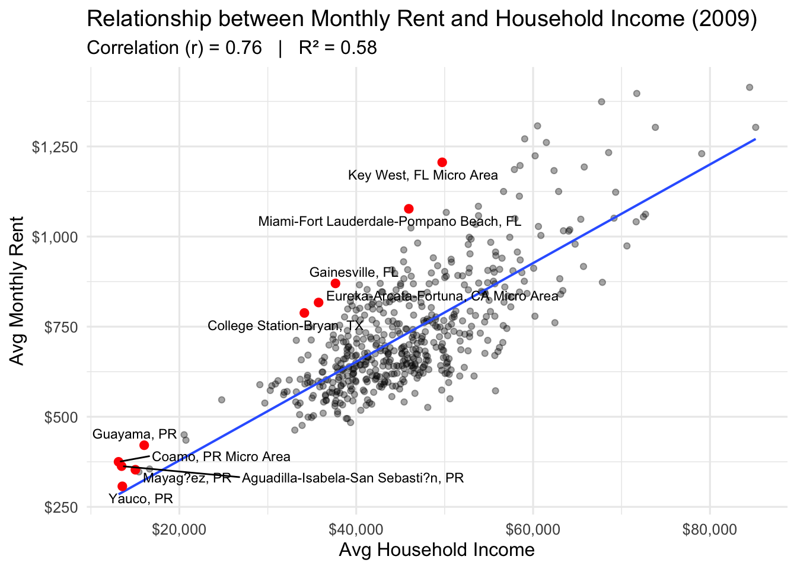
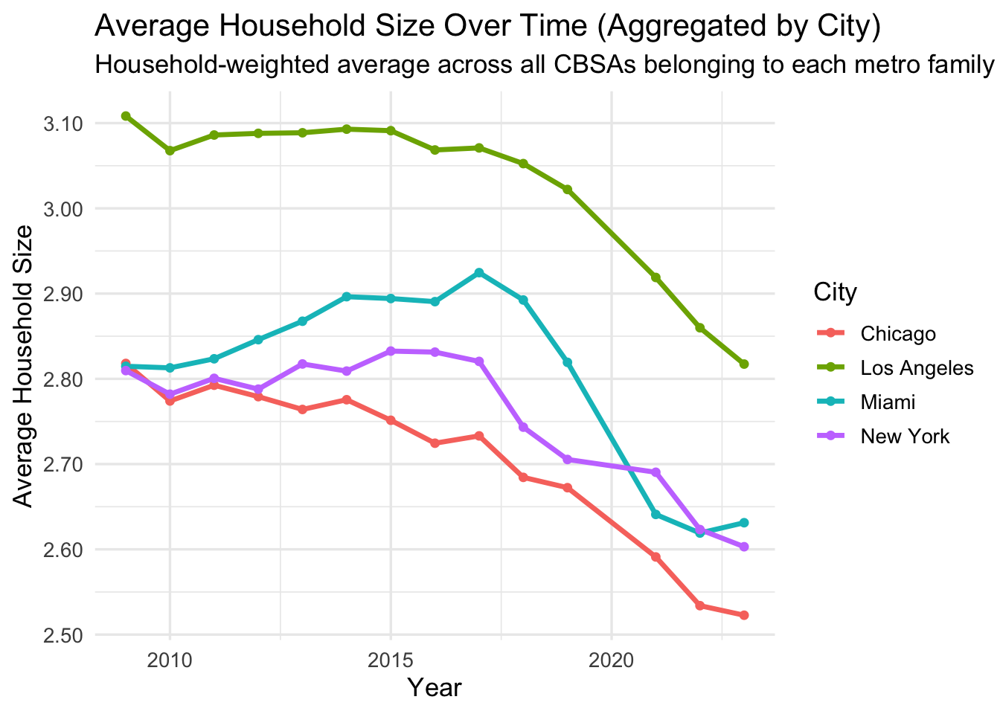
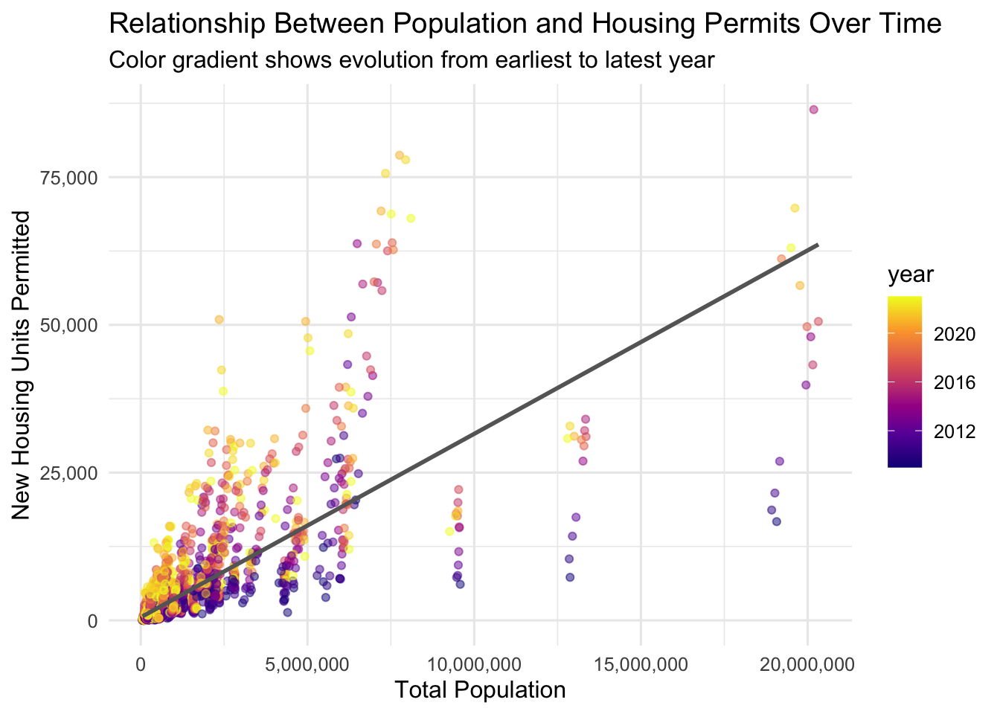

YIMBY by Numbers: Identifying America’s Most Housing-Friendly Cities
Introduction
Housing affordability sits at the heart of America’s urban challenge—especially in large metropolitan regions where zoning rules, construction rates, and income levels all determine who can actually afford a home. In this mini-project, we take a fresh look at the “Yes-In-My-Backyard” (YIMBY) approach, which argues that more permissive zoning and higher housing supply lead to greater affordability and more dynamic cities.
By pulling together data from the U.S. Census Bureau, the Bureau of Labor Statistics, and related sources, we build a transparent, data-driven index to identify which U.S. metro areas are most aligned with YIMBY-friendly conditions: steady housing stock growth, rising incomes, and favorable industry dynamics. The goal: highlight the cities where policy reform and development activity could reduce housing costs, bolster diversity, and improve urban outcomes.
As you explore the sections ahead—Data Acquisition, Relationship Diagrams, Initial Visualizations and Policy Brief—you’ll see how each piece of the data puzzle fits together and supports a strategic narrative: in which American metros are the forces of supply, affordability, and economic vitality converging?
ü߆ Data Acquisition
üóÇÔ∏è US Census Bureau ACS
This project draws heavily from the U.S. Census Bureau’s American Community Survey (ACS), which provides annual demographic and housing data across metropolitan regions.
Four essential variables were retrieved at the Core-Based Statistical Area (CBSA) level between 2009 and 2023, offering a consistent view of economic and housing trends across time:
Household Income (B19013_001): Median household income over the past 12 months — a key measure of local purchasing power.
Monthly Rent (B25064_001): Median gross rent per month — reflecting affordability pressures for renters.
Population (B01003_001): Total population count, representing the overall size and growth of each CBSA.
Households (B11001_001): Total number of occupied housing units, used to calculate household formation rates.
Together, these variables paint a detailed picture of how American metropolitan areas have evolved economically and demographically over the last decade.
Code
library(readr)library(knitr)library(dplyr)library(DT)library(stringr)library(htmltools)library(lubridate)library(ggplot2)library(tidyverse)library(purrr)library(glue)library(readxl)library(tidycensus)library(httr2)library(rvest)if(!dir.exists(file.path("data", "mp02"))){dir.create(file.path("data", "mp02"), showWarnings=FALSE, recursive=TRUE)}library <-function(pkg){## Mask base::library() to automatically install packages if needed## Masking is important here so downlit picks up packages and links## to documentation pkg <-as.character(substitute(pkg))options(repos =c(CRAN ="https://cloud.r-project.org"))if(!require(pkg, character.only=TRUE, quietly=TRUE)) install.packages(pkg)stopifnot(require(pkg, character.only=TRUE, quietly=TRUE))}get_acs_all_years <-function(variable, geography="cbsa",start_year=2009, end_year=2023){ fname <-glue("{variable}_{geography}_{start_year}_{end_year}.csv") fname <-file.path("data", "mp02", fname)if(!file.exists(fname)){ YEARS <-seq(start_year, end_year) YEARS <- YEARS[YEARS !=2020] # Drop 2020 - No survey (covid) ALL_DATA <-map(YEARS, function(yy){ tidycensus::get_acs(geography, variable, year=yy, survey="acs1") |> dplyr::mutate(year=yy) |> dplyr::select(-moe, -variable) |> dplyr::rename(!!variable := estimate) }) |> dplyr::bind_rows()write_csv(ALL_DATA, fname) }read_csv(fname, show_col_types=FALSE)}# Household income (12 month)INCOME <-get_acs_all_years("B19013_001") |>rename(household_income = B19013_001)# Monthly rentRENT <-get_acs_all_years("B25064_001") |>rename(monthly_rent = B25064_001)# Total populationPOPULATION <-get_acs_all_years("B01003_001") |>rename(population = B01003_001)# Total number of householdsHOUSEHOLDS <-get_acs_all_years("B11001_001") |>rename(households = B11001_001)glimpse(INCOME)
To capture new housing supply, data were gathered from the U.S. Census Bureau’s Building Permits Survey (BPS), covering the years 2009–2023. This dataset reports the annual number of newly permitted housing units per CBSA, serving as a direct indicator of construction activity and local development intensity.
Older data (2009–2018) were obtained through archived text files, while more recent years (2019–2023) were integrated from manually processed Excel tables.
By combining this permit data with demographic and economic information, the project quantifies how actively different regions are responding to housing demand through new construction.
Labor market information was sourced from the Bureau of Labor Statistics (BLS), specifically the Quarterly Census of Employment and Wages (QCEW) and NAICS (North American Industry Classification System) codes. This dataset provides detailed insights into the structure and diversity of regional economies, which are closely tied to housing demand and affordability trends.
The table includes: - Industry-level employment and average wage data for each geographic area.
- Hierarchical industry classifications from Level 1 (broad sectors like “Agriculture” or “Manufacturing”) to Level 4 (detailed sub-industries such as “Soybean Farming” or “Dry Pea and Bean Farming”).
By linking employment and wage data with housing and income indicators, this dataset adds an economic context to housing affordability — showing how regional job composition and industry strength may influence development and cost-of-living dynamics.
Code
get_bls_industry_codes <-function(){ fname <-file.path("data", "mp02", "bls_industry_codes.csv")library(dplyr)library(tidyr)library(readr)if(!file.exists(fname)){ resp <-request("https://www.bls.gov") |>req_url_path("cew", "classifications", "industry", "industry-titles.htm") |>req_headers(`User-Agent`="Mozilla/5.0 (Macintosh; Intel Mac OS X 10.15; rv:143.0) Gecko/20100101 Firefox/143.0") |>req_error(is_error = \(resp) FALSE) |>req_perform()resp_check_status(resp) naics_table <-resp_body_html(resp) |>html_element("#naics_titles") |>html_table() |>mutate(title =str_trim(str_remove(str_remove(`Industry Title`, Code), "NAICS"))) |> dplyr::select(Code, title) |># Keep both Code and title columnsmutate(depth =if_else(nchar(Code) <=5, nchar(Code) -1, NA)) |>filter(!is.na(depth))# These were looked up manually on bls.gov after finding # they were presented as ranges. Since there are only three# it was easier to manually handle than to special-case everything else naics_missing <- tibble::tribble(~Code, ~title, ~depth, "31", "Manufacturing", 1,"32", "Manufacturing", 1,"33", "Manufacturing", 1,"44", "Retail", 1, "45", "Retail", 1,"48", "Transportation and Warehousing", 1, "49", "Transportation and Warehousing", 1 ) naics_table <-bind_rows(naics_table, naics_missing) naics_table <- naics_table |>filter(depth ==4) |>rename(level4_title=title) |>mutate(level1_code =str_sub(Code, end=2), level2_code =str_sub(Code, end=3), level3_code =str_sub(Code, end=4)) |>left_join(naics_table, join_by(level1_code == Code)) |>rename(level1_title=title) |>left_join(naics_table, join_by(level2_code == Code)) |>rename(level2_title=title) |>left_join(naics_table, join_by(level3_code == Code)) |>rename(level3_title=title) |> dplyr::select(-starts_with("depth")) |>rename(level4_code = Code) |> dplyr::select(level1_title, level2_title, level3_title, level4_title, level1_code, level2_code, level3_code, level4_code) |>drop_na() |>mutate(across(contains("code"), as.integer))write_csv(naics_table, fname) }read_csv(fname, show_col_types=FALSE)}INDUSTRY_CODES <-get_bls_industry_codes()glimpse(INDUSTRY_CODES)
All datasets — including ACS demographic indicators, Building Permits Survey data, and BLS industry information — were programmatically stored in the data/mp02/ directory and exported as .csv files for reproducibility.
Using consistent geographic identifiers (such as GEOID and CBSA) and temporal alignment via the year variable, these data sources were merged into a unified analytical dataset suitable for visualization and statistical modeling.
This integration step enables direct comparison across housing, income, and employment metrics over time. By linking multiple dimensions of local economies — affordability, construction activity, and labor market conditions — the combined dataset forms a solid foundation for identifying metropolitan areas that embody YIMBY-friendly dynamics.
In short, this multi-source framework ensures that every variable shares a common spatial and temporal reference, allowing for consistent and meaningful exploration of housing affordability patterns across the United States.
Relationship diagram
Code
# # // ---------- Core ACS tables (CBSA level) ----------# Table INCOME {# GEOID int [note: 'CBSA code (e.g., 10140)']# NAME varchar# household_income numeric# year int# # Note: 'ACS 1-year, 2009–2023 (no 2020)'# Indexes {# (GEOID, year) [pk]# }# }# # Table RENT {# GEOID int# NAME varchar# monthly_rent numeric# year int# # Indexes { (GEOID, year) [pk] }# }# # Table POPULATION {# GEOID int# NAME varchar# population int# year int# # Indexes { (GEOID, year) [pk] }# }# # Table HOUSEHOLDS {# GEOID int# NAME varchar# households int# year int# # Indexes { (GEOID, year) [pk] }# }# # // ---------- Building Permits (CBSA level) ----------# Table PERMITS {# CBSA int [note: 'CBSA code (same domain as GEOID)']# new_housing_units_permitted int# year int# # Indexes { (CBSA, year) [pk] }# }# # // ---------- BLS QCEW wages (metro areas) ----------# Table INDUSTRY_CODES {# level1_code int# level1_title varchar# level2_code int# level2_title varchar# level3_code int# level3_title varchar# level4_code int [pk] // NAICS 4/5-digit rolled to level 4# level4_title varchar# }# # Table WAGES {# YEAR int# FIPS varchar [note: 'BLS area_fips; CBSA rows start with C (e.g., C1018)']# INDUSTRY int // NAICS (level4_code)# EMPLOYMENT int# TOTAL_WAGES float# AVG_WAGE float# # Indexes { (FIPS, INDUSTRY, YEAR) [pk] }# }# # // ---------- Minimal crosswalk to link BLS to ACS ----------# Table BLS_CBSA_XW {# FIPS varchar [pk, note: 'e.g., C1018']# CBSA int [note: 'derived; example: C1018 -> 10180']# }# # // ---------- Relationships ----------# # // ACS tables are different measures of the SAME CBSA–year.# // Use GEOID + year as the composite key across them.# Ref: RENT.(GEOID, year) > INCOME.(GEOID, year)# Ref: POPULATION.(GEOID, year) > INCOME.(GEOID, year)# Ref: HOUSEHOLDS.(GEOID, year) > INCOME.(GEOID, year)# # // Permits are also CBSA–year; join by CBSA = GEOID + year.# Ref: PERMITS.(CBSA, year) > INCOME.(GEOID, year)# # // WAGES maps to industry codes (many wages rows per code).# Ref: WAGES.INDUSTRY > INDUSTRY_CODES.level4_code# # // Bridge wages geography to CBSA via crosswalk, then into ACS.# Ref: WAGES.FIPS > BLS_CBSA_XW.FIPS# Ref: BLS_CBSA_XW.CBSA > INCOME.GEOID
üß≠ What the Arrows Mean (Cardinality)
INCOME ⇄ RENT / POPULATION / HOUSEHOLDS
1-to-1 per (GEOID, year)
These tables represent different measures for the same metropolitan area and year. Each combination of GEOID and year identifies a single observation across income, rent, population, and household data.
PERMITS → (ACS Tables)
1-to-1 per (CBSA, year) → (GEOID, year)
Building permit data align directly with ACS data at the metropolitan level. Because CBSA and GEOID represent equivalent geographic identifiers in the ACS, this relationship ensures a one-to-one match for each metro-year.
INDUSTRY_CODES → WAGES
1-to-many
Each industry code (NAICS Level 4) may appear in many wage records across years and geographic areas. This reflects how the same industry classification is observed repeatedly over time and across different regions.
BLS_CBSA_XW → INCOME
many-to-1
Multiple BLS FIPS metro entries can correspond to a single CBSA region. The crosswalk table connects these wage-area identifiers (FIPS) to ACS regions (GEOID), allowing economic data to integrate with demographic measures.
üí° Why the Crosswalk?
BLS area_fips identifiers such as C1018 represent metropolitan regions that correspond to CBSA codes (e.g., 10180). Rather than hard-coding this conversion, the project includes a small crosswalk table (BLS_CBSA_XW) to make this mapping explicit and maintainable.
In R, this mapping can also be computed directly when needed:
Code
CBSA_codes <-str_sub(WAGES$FIPS, 2) |>as.integer() *10# Display only the first 10 rows with a headerhead(CBSA_codes, 10)
Q1: Which CBSA (by name) permitted the largest number of new housing units in the decade from 2010 to 2019 (inclusive)?
NoteFindings
It seems that Houston-Sugar Land-Baytown, TX Metro Area had the highest total number of building permits, with 482,075 issued. This total likely represents the broader Houston metropolitan area, as seen in rows 2 and 3. Both list different areas within Houston, TX that share same total permit counts and identical CBSA codes. A similar pattern appears for Atlanta, GA and the New York–Newark–Jersey City, NY–NJ–PA Metro Area.
Code
# one name per CBSAcbsa_names <- POPULATION %>% dplyr::distinct(GEOID, NAME)top10_permits <- PERMITS %>% dplyr::filter(year >=2010& year <=2019) %>% dplyr::group_by(CBSA) %>% dplyr::summarise(total_permits_2010_2019 =sum(new_housing_units_permitted, na.rm =TRUE),.groups ="drop") %>% dplyr::arrange(dplyr::desc(total_permits_2010_2019)) %>% dplyr::slice_head(n =10) %>% dplyr::left_join(cbsa_names, by =c("CBSA"="GEOID")) %>% dplyr::transmute(`CBSA Name`= NAME,`CBSA Code`= CBSA,`Total Permits (2010–2019)`= total_permits_2010_2019 )datatable( top10_permits,rownames =TRUE,options =list(pageLength =10, dom ='t', ordering =TRUE, autoWidth =TRUE),class ='cell-border stripe hover',caption = htmltools::tags$caption(style ='caption-side: top; text-align: left; font-weight: bold;','Top 10 CBSAs by Total Housing Permits (2010–2019)' ))
Q2: In what year did Albuquerque, NM (CBSA Number 10740) permit the most new housing units?
NoteFindings
Albuquerque, NM (CBSA 10740) recorded its highest number of new housing permits in 2021, with 4,021 units approved. This represented a massive rebound in local housing development compared to 2020, a year when construction activity slowed significantly due to COVID-19 disruptions and supply chain constraints.
Following the pandemic downturn, 2021 marked a surge in building demand reflecting pent up household formation and increased migration to affordable metros. Even in 2022, Albuquerque continued to show strong momentum with 2,852 new permits, which remained notably higher than pre-pandemic levels in 2019.
Overall, the post-COVID recovery period clearly reignited residential construction in the Albuquerque metro area.
Q4: Data scientists and business analysts are recorded under NAICS code 5182. What is the last year in which the NYC CBSA had the most data scientists in the country?
NoteFindings
The New York–Newark–Jersey City, NY-NJ-PA Metro Area (CBSA 35620) last had the highest number of data scientists (NAICS 5182) in the country in 2015, with 18,922 employed in the sector.
Code
# Filter WAGES dataset for NAICS code 5182 (data scientists & related roles)nyc_data_scientists <- WAGES %>%filter(INDUSTRY ==5182) %>%group_by(YEAR, FIPS) %>%summarise(total_employment =sum(EMPLOYMENT, na.rm =TRUE), .groups ="drop") %>%arrange(desc(total_employment))# Identify the CBSA with max employment each yearyearly_max <- nyc_data_scientists %>%group_by(YEAR) %>%slice_max(total_employment, n =1, with_ties =FALSE)# Check if NYC CBSA (FIPS code C3562) appears as the top regionnyc_top_years <- yearly_max %>%filter(FIPS =="C3562") %>%arrange(desc(YEAR))# Display the most recent year NYC was topdatatable( nyc_top_years %>% dplyr::select(Year = YEAR, `NYC CBSA Code`= FIPS, `Total Data Scientists`= total_employment), options =list(dom ='t',paging =FALSE,searching =FALSE ),caption ="Years When NYC Had the Most Data Scientists (NAICS 5182)") %>%formatCurrency('Total Data Scientists', currency ="", digits =0)
Q4: What fraction of total wages in the NYC CBSA was earned by people employed in the finance and insurance industries (NAICS code 52)? In what year did this fraction peak?
NoteFindings
In 2014, New York City’s Finance and Insurance sector (NAICS 52) reached its peak share of total wages, accounting for approximately 4.6% of all wages—around $119 billion out of $2.6 trillion total.
This illustrates NYC’s continued dependence on the financial industry as a major wage driver. While the sector’s wage share has declined slightly in later years, finance remains a cornerstone of the city’s economy.
1) The relationship between monthly rent and average household income per CBSA in 2009.
NoteFindings
The scatterplot shows a strong positive relationship between average household income and average monthly rent across CBSAs in 2009, with a correlation (r) of 0.76 and an R² of 0.58. This indicates that higher-income areas tend to have higher rents, although income explains only about 58% of rent variation — suggesting that other local factors (like housing supply and demand) also play an important role.
Several Puerto Rico metro areas (e.g., Coamo, Guayama, Mayagüez) show exceptionally high rent-to-income ratios, reflecting affordability challenges despite low rent levels, due to very low household incomes. In contrast, high-income regions like Key West, FL and Miami-Fort Lauderdale, FL also appear near the upper trend line, indicating higher absolute rent burdens in wealthier markets.
Code
library(ggrepel) # install.packages("ggrepel") if neededlibrary(dplyr)install.packages("scales") # only if not installed
The downloaded binary packages are in
/var/folders/mt/2l7ffl0j0772_8flg2xcf32m0000gn/T//RtmpcTgYmr/downloaded_packages
Code
library(scales)# Filter and join 2009 ACS datarent_income_2009 <- RENT %>%filter(year ==2009) %>% dplyr::select(GEOID, NAME, monthly_rent) %>%inner_join( INCOME %>%filter(year ==2009) %>% dplyr::select(GEOID, household_income),by ="GEOID" ) %>%mutate(rent_to_income_ratio = (monthly_rent *12) / household_income )# Display sample of joined datahead(rent_income_2009)
# A tibble: 6 × 5
GEOID NAME monthly_rent household_income rent_to_income_ratio
<dbl> <chr> <dbl> <dbl> <dbl>
1 10140 Aberdeen, WA Micro A… 650 36345 0.215
2 10180 Abilene, TX Metro Ar… 712 42931 0.199
3 10300 Adrian, MI Micro Area 645 45640 0.170
4 10380 Aguadilla-Isabela-Sa… 363 13470 0.323
5 10420 Akron, OH Metro Area 723 47482 0.183
6 10500 Albany, GA Metro Area 624 36218 0.207
Code
top_ratio <- rent_income_2009 %>%slice_max(rent_to_income_ratio, n =10)# Compute correlation and R-squaredr_val <-cor(rent_income_2009$household_income, rent_income_2009$monthly_rent, use ="complete.obs")r2_val <- r_val^2# Format nicely for the subtitlecorr_text <-paste0("Correlation (r) = ", round(r_val, 2), " | R² = ", round(r2_val, 2))# Plot with annotationggplot(rent_income_2009, aes(household_income, monthly_rent)) +geom_point(alpha =0.35) +geom_smooth(method ="lm", se =FALSE, linewidth =0.7) +geom_point(data = top_ratio, color ="red", size =2.2) + ggrepel::geom_text_repel(data = top_ratio,aes(label =str_replace(NAME, " Metro Area$", "")),size =3, max.overlaps =20 ) +scale_x_continuous(labels =label_dollar()) +scale_y_continuous(labels =label_dollar()) +labs(title ="Relationship between Monthly Rent and Household Income (2009)",subtitle = corr_text,x ="Avg Household Income",y ="Avg Monthly Rent" ) +theme_minimal(base_size =12)

Code
# Display as an interactive datatabledatatable( top_ratio %>% dplyr::select(NAME, monthly_rent, household_income, rent_to_income_ratio) %>%rename(`CBSA Name`= NAME,`Monthly Rent ($)`= monthly_rent,`Household Income ($)`= household_income,`Rent-to-Income Ratio`= rent_to_income_ratio ),caption ="Top 10 CBSAs by Rent-to-Income Ratio (2009)",options =list(dom ='t',paging =FALSE,searching =FALSE )) %>%formatCurrency('Monthly Rent ($)', currency ="$", digits =0) %>%formatCurrency('Household Income ($)', currency ="$", digits =0) %>%formatPercentage('Rent-to-Income Ratio', digits =1)
2) The relationship between total employment and total employment in the health care and social services sector (NAICS 62) across different CBSAs. Design your visualization so that it is possible to see the evolution of this relationship over time.
NoteFindings
Strong Positive Relationship: Across CBSAs, total employment and health care employment are closely correlated — regions with larger overall workforces tend to have higher employment in the health care and social assistance sector.
Gradual Growth Over Time: The average share of health care employment increased from around 3.5% in 2009 to approximately 3.9% in 2023, showing consistent expansion across years.
Sector Resilience: Even during periods of broader economic fluctuation, the health care sector maintained steady growth, emphasizing its structural importance and resilience in local economies.
Implication: This trend suggests that health care continues to play a growing role in regional labor markets, likely driven by demographic changes and rising demand for medical and social services.
Code
employment_trend <- WAGES %>%group_by(FIPS, YEAR) %>%summarise(total_employment =sum(EMPLOYMENT, na.rm =TRUE),healthcare_employment =sum(EMPLOYMENT[INDUSTRY ==62], na.rm =TRUE),.groups ="drop" ) %>%mutate(share_healthcare = healthcare_employment / total_employment)employment_trend <- employment_trend %>%filter(!is.na(total_employment), total_employment >0,!is.na(healthcare_employment), healthcare_employment >0)ggplot(employment_trend, aes(x = total_employment, y = healthcare_employment, color = YEAR)) +geom_point(alpha =0.5) +geom_smooth(method ="lm", se =FALSE, linewidth =0.8) +scale_x_continuous(labels = scales::label_number(scale_cut = scales::cut_short_scale())) +scale_y_continuous(labels = scales::label_number(scale_cut = scales::cut_short_scale())) +scale_color_viridis_c(option ="plasma", end =0.9) +labs(title ="Evolution of Health Care & Social Assistance Employment vs Total Employment (2009–2023)",x ="Total Employment (All Industries)",y ="Health Care & Social Assistance Employment",color ="Year" ) +theme_minimal(base_size =12)
Code
ggplot(employment_trend, aes(x = YEAR, y = share_healthcare)) +stat_summary(fun = mean, geom ="line", color ="#0073C2FF", linewidth =1.2) +stat_summary(fun.data = mean_se, geom ="ribbon", alpha =0.15, fill ="#0073C2FF") +labs(title ="Average Share of Health Care Employment over Time (2009–2023)",x ="Year",y ="Health Care Share of Total Employment" ) +scale_y_continuous(labels = scales::label_percent(accuracy =0.1)) +# two decimalstheme_minimal(base_size =12)
3) The evolution of average household size over time. Use different lines to represent different CBSAs.
NoteFindings
Across all CBSAs, average household size has gradually declined between 2009 and 2023. The national median (blue line) remained stable around 2.6–2.8, while major metros—especially Los Angeles and Miami—consistently reported larger household sizes above the national trend. In contrast, New York and Chicago trended lower, reflecting smaller and denser urban households and a rise in single-person living arrangements.
All four major metros experienced steady growth in total household counts from 2009 to 2023.
- New York maintained the largest number of households, surpassing 7 million by 2023.
- Los Angeles showed strong growth, approaching 4.5 million households, followed by Chicago and Miami. - Miami displayed the steepest growth curve, reflecting post-2015 migration and housing expansion.
This trend highlights continued urban concentration and regional population growth in Sun Belt metros.
Code
# 1) Compute household size per CBSA-yearhh_size <- POPULATION %>%inner_join(HOUSEHOLDS, by =c("GEOID","NAME","year")) %>%mutate(hh_size = population / households) %>%filter(is.finite(hh_size), hh_size >0, hh_size <10)# 2) Tag the four city familieshh_size4 <- hh_size %>%mutate(city =case_when(str_detect(NAME, regex("New York|Northern New Jersey|Jersey City", ignore_case =TRUE)) ~"New York",str_detect(NAME, regex("Los Angeles|Long Beach|Anaheim|Santa Ana", ignore_case =TRUE)) ~"Los Angeles",str_detect(NAME, regex("Chicago|Naperville|Joliet|Elgin", ignore_case =TRUE)) ~"Chicago",str_detect(NAME, regex("Miami|Fort Lauderdale|Pompano Beach", ignore_case =TRUE)) ~"Miami",TRUE~NA_character_ ))# 3) Plot: all CBSAs gray; 4 cities colored; national median in blueggplot(hh_size4, aes(x = year, y = hh_size, group = NAME)) +# all CBSAs in graygeom_line(alpha =0.08, color ="gray50") +# highlighted CBSAs belonging to the 4 city familiesgeom_line(data =filter(hh_size4, !is.na(city)),aes(color = city), linewidth =1.05 ) +# national median line (blue)stat_summary(data = hh_size4, aes(group =1), fun = median,geom ="line", linewidth =1.2, color ="#2C7FB8", alpha =0.9 ) +scale_color_manual(name ="Highlighted Cities",values =c("New York"="#6A5ACD", "Los Angeles"="#1B9E77","Chicago"="#E69F00", "Miami"="#D55E00") ) +scale_y_continuous("Average Household Size", limits =c(1.5, 4.5), breaks =seq(1.5, 4.5, 0.5)) +scale_x_continuous("Year", breaks = pretty) +labs(subtitle ="Gray = all CBSAs; colored = CBSA lines within each city family; blue = national median" ) +theme_minimal(base_size =12) +theme(legend.position ="bottom")
Code
city_households <- HOUSEHOLDS %>%mutate(city =case_when(str_detect(NAME, regex("New York|Northern New Jersey|Jersey City", ignore_case =TRUE)) ~"New York",str_detect(NAME, regex("Los Angeles|Long Beach|Anaheim|Santa Ana", ignore_case =TRUE)) ~"Los Angeles",str_detect(NAME, regex("Chicago|Naperville|Joliet|Elgin", ignore_case =TRUE)) ~"Chicago",str_detect(NAME, regex("Miami|Fort Lauderdale|Pompano Beach", ignore_case =TRUE)) ~"Miami",TRUE~NA_character_ ) ) %>%filter(!is.na(city))# 2) Sum all CBSA parts per city-yearcity_year_hh <- city_households %>%group_by(city, year) %>%summarise(total_households =sum(households, na.rm =TRUE), .groups ="drop")# 3) Plotggplot(city_year_hh, aes(year, total_households, group = city, color = city)) +geom_line(linewidth =1.1) +geom_point(size =1.4) +scale_y_continuous(labels =label_comma()) +scale_x_continuous(breaks = pretty) +facet_wrap(~ city, ncol =2, scales ="free_y") +labs(title ="Population by City (Aggregated CBSA Variants)",x ="Year", y ="Households") +theme_minimal(base_size =13) +theme(legend.position ="none")
Code
acs_tagged <- HOUSEHOLDS %>%mutate(city =case_when(str_detect(NAME, regex("New York|Northern New Jersey|Jersey City", ignore_case =TRUE)) ~"New York",str_detect(NAME, regex("Los Angeles|Long Beach|Anaheim|Santa Ana", ignore_case =TRUE)) ~"Los Angeles",str_detect(NAME, regex("Chicago|Naperville|Joliet|Elgin", ignore_case =TRUE)) ~"Chicago",str_detect(NAME, regex("Miami|Fort Lauderdale|Pompano Beach", ignore_case =TRUE)) ~"Miami",TRUE~NA_character_ ) ) %>%filter(!is.na(city)) %>% dplyr::select(GEOID, NAME, year, households, city)# 2) Join population to compute HH size at CBSA-yearcbsa_size <- acs_tagged %>%inner_join( POPULATION %>% dplyr::select(GEOID, NAME, year, population),by =c("GEOID", "NAME", "year") ) %>%filter(households >0, population >0) %>%mutate(hh_size = population / households)# 3) Aggregate to city-year with a household-weighted averagecity_year_size <- cbsa_size %>%group_by(city, year) %>%summarise(total_pop =sum(population, na.rm =TRUE),total_hh =sum(households, na.rm =TRUE),avg_hh_size = total_pop / total_hh,.groups ="drop" )# 4) Plot (single panel)ggplot(city_year_size, aes(x = year, y = avg_hh_size, color = city)) +geom_line(linewidth =1.2) +geom_point(size =1.6) +scale_y_continuous(labels =number_format(accuracy =0.01)) +scale_x_continuous(breaks = pretty) +labs(title ="Average Household Size Over Time (Aggregated by City)",subtitle ="Household-weighted average across all CBSAs belonging to each metro family",x ="Year",y ="Average Household Size",color ="City" ) +theme_minimal(base_size =13) +theme(legend.position ="right")

Building Indices of Housing Affordability and Housing Stock Growth
Rent Burden
NoteKey Takeaways
üèôÔ∏è Rent Burden Across U.S. Metropolitan Areas
The Rent Burden Index, standardized between 0 (least burdened) and 100 (most burdened), reveals notable disparities in housing affordability across U.S. metropolitan areas. Nationally, the long-term average rent-to-income ratio serves as the baseline, meaning higher index values correspond to metros where residents spend a larger portion of income on rent. In 2023, Clearlake, CA topped the list with a Rent Burden Index of 72.9, indicating that residents there devote roughly 31% of their income to rent—well above the national mean. Other high-burden areas include Aguadilla, PR, Cape Coral–Fort Myers, FL, and Miami–Fort Lauderdale–West Palm Beach, FL, reflecting how coastal and resort economies continue to face pressure from limited housing supply and post-pandemic migration patterns.
üóΩ New York‚Äôs Rent Burden Over Time
In contrast, the New York–Newark–Jersey City metro exhibits moderate but cyclical rent burden levels. Between 2013 and 2023, its Rent Burden Index fluctuated between 35 and 41, remaining below the most heavily burdened metros yet consistently above the national average. The sharp dip in 2019 suggests a brief period of improved affordability—potentially influenced by wage growth outpacing rent increases—followed by a rebound in 2021 as pandemic-era demand surged. This volatility underscores the sensitivity of high-density, supply-constrained metros like New York to broader economic cycles and short-term housing shocks.
üìà National Interpretation and Broader Context
Across the country, the data suggest a widening gap between high- and low-burden regions. The top 10 CBSAs in 2023 all recorded rent-to-income ratios near or above 30%, a level commonly used by HUD to define housing cost stress. Meanwhile, large interior metros with slower population growth and greater housing elasticity remain well below this threshold. The Rent Burden Index thus offers a standardized lens to compare affordability dynamics across time and geography—highlighting how the interplay between income growth, housing supply, and regional demand continues to shape access to affordable living in American cities.
üèóÔ∏è Building-Friendliness Insights
The Building-Friendliness Index measures how actively a metropolitan area adds new housing relative to its population size and growth rate. It standardizes both permits per 1,000 residents and permit growth versus population growth on a 0–100 scale, where 100 indicates the most construction-friendly market.
1. Leaders in Construction ActivityIn 2023, Salisbury, MD Metro Area ranked first nationwide with a Building-Friendliness Index of 100, issuing nearly 38 permits per 1,000 residents and posting a 13.3 percentage-point surplus in permit growth over population growth. Other highly active metros include The Villages, FL (≈ 34 permits per 1,000) and Myrtle Beach–Conway–North Myrtle Beach, SC (≈ 33 permits per 1,000). These regions show strong housing expansion relative to local demand, suggesting greater elasticity in housing supply.
2. Geographic Patterns Most of the top-ranked CBSAs are located in the Southeast and coastal regions, particularly in Florida and South Carolina, where both population inflows and new construction are elevated. Their consistently positive growth differentials indicate that permitting has kept pace—or even exceeded—population pressures.
3. Broader Interpretation High building-friendliness implies a regulatory and economic environment that facilitates new development, helping stabilize housing affordability over time. Conversely, metro areas with low index values likely face supply constraints, which can magnify rent burden and affordability challenges even when population growth is modest.
Code
# 1. Join income and rent data for all yearsrent_burden <- RENT %>%inner_join(INCOME, by =c("GEOID", "NAME", "year")) %>%mutate(rent_to_income = (monthly_rent *12) / household_income)# 2. Compute long-term (multi-year) national baselinenational_avg <-mean(rent_burden$rent_to_income, na.rm =TRUE)national_sd <-sd(rent_burden$rent_to_income, na.rm =TRUE)# 3. Create standardized Rent Burden Index# - 0 = national average across all years# - +1 SD = more rent burdened; -1 SD = less rent burdened# - also create percentile-like index (0–100) for interpretabilityrent_burden <- rent_burden %>%mutate(rent_burden_z = (rent_to_income - national_avg) / national_sd,rent_burden_index = scales::rescale(rent_to_income,to =c(0, 100),from =range(rent_burden$rent_to_income, na.rm =TRUE)) )nyc_burden <- rent_burden %>%filter(NAME =="New York-Newark-Jersey City, NY-NJ-PA Metro Area")ggplot(nyc_burden, aes(x = year, y = rent_burden_index)) +geom_line(color ="#0073C2FF", linewidth =1.1) +geom_point(size =2, color ="#0073C2FF") +labs(title ="Rent Burden Over Time — New York Metro",subtitle ="Indexed to long-term national average (0 = least burdened, 100 = most burdened)",x ="Year", y ="Rent Burden Index (0–100)" ) +theme_minimal(base_size =13)
library(dplyr)library(ggplot2)library(scales)library(DT)# 1. Join building permits and populationbuild_metric <- PERMITS %>%inner_join( POPULATION,by =c("CBSA"="GEOID", "year"="year") ) %>%mutate(permits_per_capita = new_housing_units_permitted / population,permits_per_1000 = permits_per_capita *1000 )# 2) Compute long-term averages and growth by metrobuild_metric <- build_metric %>%group_by(NAME) %>%arrange(year, .by_group =TRUE) %>%mutate(pop_growth = (population /lag(population)) -1,permit_growth = (new_housing_units_permitted /lag(new_housing_units_permitted)) -1,# clean impossible/infinite values from first year or zero-denominatorspop_growth =ifelse(is.infinite(pop_growth), NA_real_, pop_growth),permit_growth =ifelse(is.infinite(permit_growth), NA_real_, permit_growth),growth_diff = permit_growth - pop_growth # >0 => permits growing faster than population ) %>%ungroup()# 3) Standardize to 0–100 scales for interpretabilitypermits_range <-range(build_metric$permits_per_1000, na.rm =TRUE)growth_range <-range(build_metric$growth_diff, na.rm =TRUE)build_metric <- build_metric %>%mutate(build_index = scales::rescale(permits_per_1000, to =c(0, 100), from = permits_range),growth_index = scales::rescale(growth_diff, to =c(0, 100), from = growth_range),# optional composite score (tune weights as you like)build_friendliness =0.6* build_index +0.4* growth_index )top_build <- build_metric %>%arrange(desc(build_index)) %>%slice_head(n =10)bottom_build <- build_metric %>%filter(year == latest_year) %>%arrange(build_index) %>%slice_head(n =10)datatable(bind_rows(top_build, bottom_build) %>% dplyr::select(NAME, year, permits_per_1000, build_index, growth_diff) %>%rename(`CBSA`= NAME,`Year`= year,`Permits per 1,000 residents`= permits_per_1000,`Building-Friendliness Index (0–100)`= build_index,`Permit Growth – Population Growth`= growth_diff ),caption =paste0("CBSAs with Highest and Lowest Building-Friendliness (", latest_year, ")"),options =list(dom ='t', paging =FALSE, scrollY =400)) %>%formatRound(c('Permits per 1,000 residents', 'Building-Friendliness Index (0–100)', 'Permit Growth – Population Growth'), 2)
Code
library(ggplot2)library(scales)ggplot(build_metric, aes(x = population, y = new_housing_units_permitted, color = year)) +geom_point(alpha =0.5) +geom_smooth(method ="lm", se =FALSE, color ="gray40") +scale_color_viridis_c(option ="plasma") +scale_x_continuous(labels =label_comma()) +scale_y_continuous(labels =label_comma()) +labs(title ="Relationship Between Population and Housing Permits Over Time",subtitle ="Color gradient shows evolution from earliest to latest year",x ="Total Population",y ="New Housing Units Permitted" ) +theme_minimal(base_size =12)

Housing Growth
NoteKey Takeaways
üè† Key Takeaways on Housing Growth (2023)
1.Top-Performing Metro Areas In 2023, Salisbury, MD, Myrtle Beach–Conway–North Myrtle Beach, SC, and Punta Gorda, FL led the nation in instantaneous housing growth. - Salisbury stands out with a Building-Friendliness Index of 100, reflecting 37.7 permits per 1,000 residents—the highest in the dataset despite its negative 5-year population growth. - This indicates an unusually high pace of new construction relative to its population size, possibly due to post-pandemic migration patterns, second-home development, or local pro-housing policies. - Southern and coastal regions dominate the top rankings—especially Florida and South Carolina—showing strong residential expansion in smaller or mid-sized metros.
2.Low-Growth and Stagnant Areas At the other end of the spectrum, Wheeling (WV-OH), Danville (IL), and Morgantown (WV) display near-zero growth. - Their Instantaneous Growth values are close to 0 permits per 1,000 residents, signaling minimal new construction activity. - Many of these metros have experienced negative or stagnant population growth, limiting the incentive for new development. - Their low Composite Index scores (all under 1) reveal persistent underbuilding relative to both population size and longer-term trends.
3. Broader Interpretation These results highlight a regional imbalance in housing growth: - Rapid construction is concentrated in Sun Belt and coastal markets, while Midwestern and Appalachian metros lag behind. - The rate-based component (permits relative to 5-year population gains) amplifies these differences: metros with strong in-migration but limited new supply appear under pressure, whereas slower-growing regions that continue permitting aggressively may face oversupply risks. - The composite index provides a more nuanced view—identifying areas that balance immediate building activity with sustainable long-term growth.
Code
library(dplyr)library(scales)library(DT)# --- Clean join (types + uniqueness) ---permits_fix <- PERMITS %>%rename(GEOID = CBSA) %>%mutate(GEOID =as.character(GEOID)) %>%distinct(GEOID, year, .keep_all =TRUE)pop_fix <- POPULATION %>%mutate(GEOID =as.character(GEOID)) %>%distinct(GEOID, year, .keep_all =TRUE)hg <- pop_fix %>%inner_join(permits_fix, by =c("GEOID","year")) %>%arrange(GEOID, year)# --- 5-yr growth (starts in 2014) ---hg <- hg %>%group_by(GEOID) %>%mutate(pop_5yrs_ago =lag(population, 5),pop_growth_count = population - pop_5yrs_ago,pop_growth_rate = pop_growth_count / pop_5yrs_ago) %>%ungroup()# --- Two metrics ---hg <- hg %>%mutate(inst_growth = (new_housing_units_permitted /pmax(population, 1)) *1000,rate_denom =if_else(!is.na(pop_growth_count) & pop_growth_count >0, pop_growth_count, NA_real_),rate_growth = new_housing_units_permitted / rate_denom )# --- Standardize WITHIN YEAR (key change) ---hg <- hg %>%group_by(year) %>%mutate(inst_index =rescale(inst_growth, to =c(0,100), from =range(inst_growth, na.rm =TRUE)),rate_index =rescale(rate_growth, to =c(0,100), from =range(rate_growth, na.rm =TRUE)),composite_index =rowMeans(cbind(inst_index, rate_index), na.rm =TRUE) ) %>%ungroup()# --- Tables for the latest year only ---last_year <-max(hg$year, na.rm =TRUE)hg_latest <-filter(hg, year == last_year)pretty_tbl <-function(df) { df %>%transmute(`Metro Area`= NAME,Year = year,Population = population,Permits = new_housing_units_permitted,`5-yr Pop Growth (%)`= pop_growth_rate *100,`Instantaneous Growth (per 1k)`= inst_growth,`Rate-based Growth (/ 5-yr add)`= rate_growth,`Instantaneous Index (0–100)`= inst_index,`Rate-based Index (0–100)`= rate_index,`Composite Index (0–100)`= composite_index )}# Formatter that works with your current column namesfmt_dt <-function(dtobj) { dtobj |># no rownames columnformatRound(c("Population","Permits"), digits =0) |># your "5-yr Pop Growth (%)" is already on a 0–100 scale, so use formatRound (not formatPercentage)formatRound("5-yr Pop Growth (%)", digits =1) |>formatRound("Instantaneous Growth (per 1k)", digits =2) |>formatRound("Rate-based Growth (/ 5-yr add)", digits =2) |>formatRound(c("Instantaneous Index (0–100)","Rate-based Index (0–100)","Composite Index (0–100)"), digits =2)}# Top 10 / Bottom 10 by instantaneous index (within-year scaling)top10 <- hg_latest %>%arrange(desc(inst_index)) %>%slice_head(n =10) %>%pretty_tbl()bottom10 <- hg_latest %>%arrange(inst_index) %>%slice_head(n =10) %>%pretty_tbl()datatable( top10,rownames =FALSE, # <<< prevents the blank first columnoptions =list(dom ='t', paging =FALSE),caption =paste0("Instantaneous Housing Growth — Top 10 (", last_year, ")")) |>fmt_dt()
1) Scatter Plot — Rent Burden Change vs Housing Growth - Most CBSAs cluster near the origin, indicating modest housing growth and little rent-burden change. - A few metros (upper-right quadrant) combine strong housing growth with lower or stable rent burden, showing the intended YIMBY pattern: additional supply easing rent pressure. - Population-growth coloring reveals that metros with strong population gains (yellow points) often experienced only small rent-burden increases or mild declines → evidence that new construction helped absorb growth. - The “YIMBY success zone” lies in the lower-right quadrant (high growth + falling burden), occupied by cities such as Gulfport-Biloxi (MS) and Auburn-Opelika (AL).
2) Time Series — Rent Burden Trends in High-Housing-Growth CBSAs - Across high-growth metros, the average rent-burden index remained flat or declined slightly between 2009 and 2023. - Despite short-term fluctuations (notably around 2020–2021), the aggregate blue line shows that expanding housing supply correlated with stabilizing affordability rather than runaway rent escalation. - This contrasts with slower-building metros, where burden indices rose steadily.
3) Top 10 ‘YIMBY Success’ CBSAs (Table)Avg Housing Growth Index: Highest in Myrtle Beach (87.8) and Hilton Head Island (55.5) – both sustained large permitting rates. Rent-Burden Change:Several metros (e.g., Madera CA, Auburn-Opelika AL, Gulfport-Biloxi MS) reduced burdens by > 9 points. Population Growth:Most cities expanded < 1%. Overall YIMBY Score:Leaders combine high housing growth + declining burden + population gain → balanced, not declining metros.
3) Bar Chart — Rent Burden Reduction in Top Cities - Green bars shorter than red indicate successful rent-burden reduction. - Metros such as College Station-Bryan (TX), Ocala (FL), and Jacksonville (NC) show pronounced improvement, aligning with high permit issuance and rising population. - Others like Tallahassee (FL) and Valdosta (GA) maintained moderate reductions, suggesting steady—but not excessive—building activity. - Overall, Southern and Southeastern CBSAs dominate the YIMBY-success cohort.
ü߆ Key Takeaways
High housing-growth metros are not necessarily overbuilt: they often stabilized rent burdens despite robust population gains.
Permitting activity matters: CBSAs issuing more permits per capita saw smaller rent-burden increases or even declines.
YIMBY “wins” occur where policy and supply keep pace with demographic pressure—most visible in small-to-mid-size Southern metros.
Conversely, **low-growth or shrinking citie*s** (upper-left quadrant) show rent relief mainly through out-migration rather than healthy expansion.
Code
# Merge rent burden + housing growth data (match on GEOID/year)viz_data <- rent_burden %>%mutate(GEOID =as.character(GEOID)) %>%# Convert to characterinner_join( hg %>%mutate(GEOID =as.character(GEOID)) %>%# Match type dplyr::select(GEOID, year, composite_index, pop_growth_rate, population),by =c("GEOID", "year") ) %>%group_by(NAME) %>%arrange(year) %>%# Make sure data is sorted by yearsummarize(rent_burden_change =last(na.omit(rent_burden_index)) -first(na.omit(rent_burden_index)),avg_housing_growth =mean(composite_index, na.rm =TRUE),total_pop_growth = (last(na.omit(population)) /first(na.omit(population))) -1,.groups ="drop" )# Scatter plot: Rent burden change vs Housing growthggplot(viz_data, aes(x = avg_housing_growth, y = rent_burden_change, color = total_pop_growth)) +geom_point(alpha =0.7, size =3) +geom_hline(yintercept =0, linetype ="dashed", color ="gray40") +geom_vline(xintercept =mean(viz_data$avg_housing_growth, na.rm =TRUE), linetype ="dashed", color ="gray40") +scale_color_viridis_c(option ="plasma", name ="Population Growth (%)", labels = scales::percent) +labs(title ="Rent Burden Change vs. Housing Growth (2009–2023)",subtitle ="YIMBY success zones: high housing growth + decreasing rent burden",x ="Average Housing Growth Index (0–100)",y ="Change in Rent Burden Index (Final − Initial)" ) +theme_minimal(base_size =13)
Code
# Identify high-growth CBSAstop_growth_cbsa <- hg %>%group_by(GEOID) %>%summarize(avg_growth =mean(composite_index, na.rm =TRUE)) %>%slice_max(avg_growth, prop =0.1) %>%pull(GEOID)# Plot rent burden trend for top-growth CBSAsrent_burden %>%filter(GEOID %in% top_growth_cbsa) %>%ggplot(aes(x = year, y = rent_burden_index, group = NAME)) +geom_line(alpha =0.3, color ="gray50") +stat_summary(fun = mean, geom ="line", color ="#0073C2FF", linewidth =1.3) +labs(title ="Rent Burden Trends in High-Housing-Growth CBSAs",subtitle ="Blue line shows average rent burden trajectory (2009–2023)",x ="Year",y ="Rent Burden Index (0–100)" ) +theme_minimal(base_size =13)